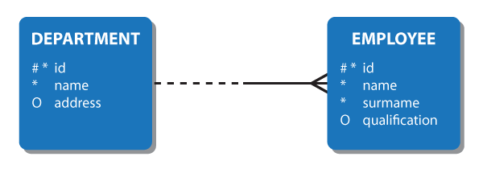

Нотация Баркера и Мартина
Нотация Баркера
Была предложена Крисом Баркером в 1980-х годах и популяризована в Великобритании

Сущности
представляются прямоугольниками с названием сущности внутри
Атрибуты
описываются внутри сущности
Мощность атрибутов
#- уникальный ключ*- обязательный ключ (NOT NULL)O- необязательный ключ
Связи
связи между сущностями обозначаются прямыми линиями. На концах линий указываются кардинальности